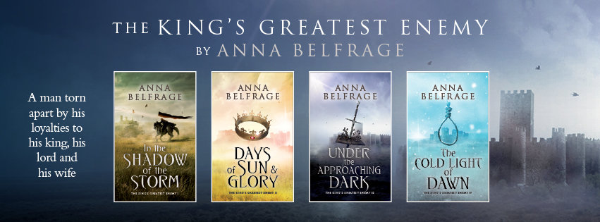
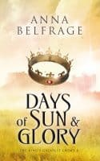

These are from my early days as a writer.
Please now find me on my Anna Stuart Instagram account.
Fab historical writers – Anna Belfrage
As part of a bid to bring readers of historical fiction new authors to enjoy, I’m featuring a different writer every week this Spring and this week I’m delighted to bring you the myriad excellent books of Anna Belfrage. I recently finished The Rip in the Veil, the first book in her timeslip Graham Saga, and really enjoyed the sassy main character and the fascinating tensions of her being catapulted into the past. Needless to say, the second book is on its way to me as I write.
Anna has published ten books so far, of which the first eight make up The Graham Saga. Set in 17th century Scotland and Virginia/Maryland, the series tells the story of Matthew and Alex, two people who should never have met – not when she was born three hundred years after him. It’s a heady blend of love, adventure, high drama and historical accuracy, which will entertain and captivate the readers. Anna actually thought book number eight would be the last in the series, but I’m delighted to report that a ninth book is taking shape so it’s not the end for lovers of Matthew and Alex’s story.
Anna has also published two books (the third is coming in April 2017) in a four-book series set in the 1320s which features Adam de Guirande, his wife Kit, and their adventures and misfortunes in connection with Roger Mortimer’s rise to power. The King’s Greatest Enemy is a series where passion and drama play out against a complex political situation, where today’s traitor may be tomorrow’s hero, and the Wheel of Fate never stops rolling.
Not a lady to rest on her laurels, Anna has lots more stuff in the pipeline. She has another timeslip trilogy she hopes to publish soon, set in contemporary England with someexcursions into the long-lost past. And then she is working on a new series revolving round the twilight years of Edward I, another about Jon Crowne -disenchanted and exiled royalist who ends up kicking his heels in Queen Christina’s Sweden - and one still gestating in which the western doors to Tewkesbury Abbey feature prominently.

That’s plenty to keep Anna busy and to delight readers going forward, so what is there to learn about Anna Belfrage as a writer? I asked her a bit about herself:
Why and how did you become a writer?
What a difficult question! Why – well, I have a vivid imagination, the kind that still has me picking up an adequate length of wood when out on a walk to pretend I’m fighting off robbers or leading a headlong charge up an incline or dancing round my opponent with a rapier. This imagination is also a constant source of new stories – some so bad they must be buried far, far down in my brain, some good enough to develop. I therefore believe not writing would have been detrimental to my mental health.
As to the how, one day I cracked my knuckles, sat down and said “get on with it.” Not. In my case, it has long been a dream to finalise a book, but with four children and a full-time job, time was not available for such pursuits. But then one day the children were no longer as small, and hubby surprised me with my very own office in which to finally coalesce my various snippets into a one story.
What’s your favourite thing about being a writer?
That I create the illusion that I’m in control. I’m not, of course: those determined and opinionated characters of mine tend to derail my plans if they don’t fit with theirs.
And your least favourite?
The promotional aspect – not because I don’t enjoy interacting with others on social media, but because it consumes a lot of time and because it is difficult to evaluate how efficient it is. Does tweeting sell books? Based on my own behavioural pattern I would say yes – but I have no idea how many books I sell based on my tweets.

I fell in love with medieval history back in fourth grade. I suppose I was fortunate in that I had very inspiring teachers, who somehow breathed life into stuffy textbooks. I was stuck in the Crusades for some time – initially due to a crush on Richard Lionheart, over time due to a fascination with this brutal east-met-west situation.
The 17th century became truly interesting for me in the early 1980s, when I met my husband whose family had fled to Sweden from Scotland in the early 17th century due to religious persecution. I started reading up and once I did, I just couldn’t stop.
I really enjoyed the timeslip aspect of your Graham Saga and would love to know why you chose to do it that way and what do you think it adds to your books?
Choose and choose…I didn’t set out to write a timeslip. I’d been playing with the idea of writing a book set in 17th century Scotland – specifically dealing with the religious persecution suffered by the Presbyterians after Charles II was “restored” – and Matthew Graham had slowly been growing from a shadow to a presence in my head. I liked Matthew, even if at times I found him a tad dour. After all, the man was a product of a very devour father and the turbulent times he lived in. Anyway, at the same time – in an entirely different corner of my brain – I had this new character beginning to take up space, and she wore jeans and hoodies and ate way too much chocolate. One day, Matthew sort of glanced up from whatever it was he was doing at the time, caught sight of Alex, and just stood there. He made it very clear to me that this strange woman with her short mop of curls was what he wanted and needed to make his life whole. I wasn’t convinced. Matthew crossed his arms and began to fade away. I panicked and relented.
I think the timeslip ingredient allows me to greater freedom in exploring the historical setting. The reader sees the 17th century through Alex’s eyes, and Alex will comment on things the modern person would miss (like showers and chocolate and antibiotics and TV and…”washing machines,” Alex interrupts, holding up hands that are very red after a day of doing laundry with lye). Alex can react to smells, sights and sounds a 17th century person would consider normal, thereby offering an ongoing commentary to the historical events. Obviously, as time passes what was once unfamiliar becomes normal, so now and then Alex is more surprised by how well she has adapted than by her surroundings.
Are there any other periods in history you fancy tackling?
The 16th century in Spain and the New World sort of beckons. I have these days when I think Philip II of Spain deserves some time in the limelight. A difficult character, but there were soft and fuzzy sides to him, such as his obvious love for his children – and especially his daughters.
What do you think is the appeal of historical fiction?
First of all, I think it’s important to state that I don’t consider historical fiction to be a genre. A multitude of genres fit under the historical fiction umbrella, and essentially good historical fiction tells stories that are relevant to the human condition but which are set in the past. I believe a lot of readers think life in the past was easier, less encumbered with devices and time thieves in the shape of smart phones and computers and TVs. It wasn’t, of course – each era comes with its own challenges – but readers enjoy the escapism offered by the historical setting.
If there was one thing in history you could change what would it be?
Ah. The problem with tampering with history is that once you do tamper, there’s no stopping the alternative timeline (Making History by Stephen Fry illustrates this beautifully). Obviously, being able to stop WW2 from ever happening would have been great. Question is, what would have happened instead?
Buy The Graham Saga here, or The King’s Greatest Enemy here.
And you can find out more about Anna at her website, amazon page, facebook page, or via twitter. Read her own very funny blogs here, or pop onto my facebook page to discuss anything in this feature.